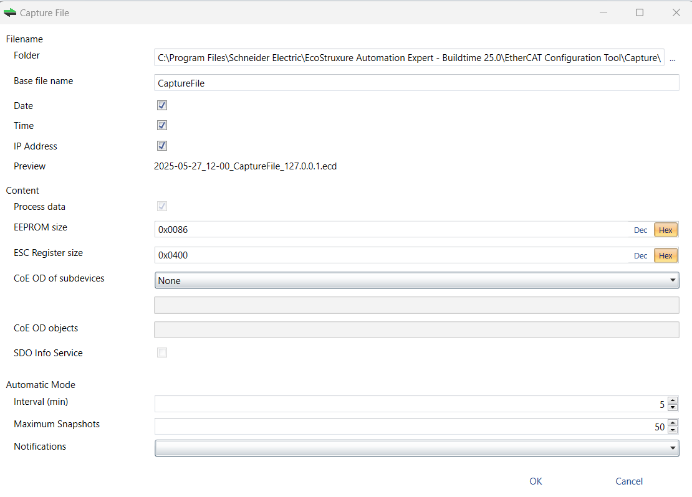

The Capture File dialog box is opened when you click on the Capture File command in the Settings menu.
This dialog box is used take one or more snapshots of your connected system into a capture file. You can then work on the created capture file instead of directly on your system.
It can be needed when:
You have a large system.
Your system is not always available.
Your system has from time to time problems. You can then activate the automatic mode and create the snapshots every specific interval or based on specific Main-device notifications.

Filename
Folder; Path where the capture files is saved.
Base file name; Base file name of the generated capture file name.
Date; If checked, adds the date to the generated capture file name.
Time; If checked, adds the time to the generated capture file name.
IP Address; If checked, adds the IP address to the generated capture file name.
Preview; Shows a preview of the generated capture file name.
Content
Process data; If checked, adds process data to the capture file (read-only).
EEPROM size; Enter there the size of the EEPROM (0x86 = default, 0 = no EEPROM).
ESC Register size; Enter there the size of the ESC Registers (0x400 = default, 0 = no ESC register).
CoE OD of Subdevice; Select there the Sub-devices of which the CoE OD information is captured:
None; CoE OD is not captured.
All; CoE OD is captured of all Sub-devices.
User defined; CoE OD is capture of the defined Sub-devices by physical address, e.g 1001-1003; 1005.
CoE OD objects; Enter there the index of specific objects collected otherwise all objects are collected, e.g. 0x1018; 0x7000-0x7FFF.
SDO Info Service; If checked, uses the SDO Info Service for loading the CoE Object Dictionary instead of readying the information from the ESI file.
Automatic Mode
Interval (min); Time to wait until it automatically takes the next snapshot.
Maximum Snapshots; Enter there the count of maximum snapshots
Notifications; Select the notifications which triggers a snapshot. The following notification are available:
STATECHANGED
ETH_LINK_CONNECTED
ETH_LINK_NOT_CONNECTED
SLAVE_STATECHANGED
SLAVE_PRESENCE
SLAVE_INITCMD_RESPONSE_ERROR
STATUS_SLAVE_ERROR
SLAVE_UNEXPECTED_STATE
DC_SLV_SYNC
DCM_SYNC